Last updated: 2026-06-26
Checks: 7 0
Knit directory: methyl_nano_cf/analysis/
This reproducible R Markdown analysis was created with workflowr (version 1.7.1). The Checks tab describes the reproducibility checks that were applied when the results were created. The Past versions tab lists the development history.
Great! Since the R Markdown file has been committed to the Git repository, you know the exact version of the code that produced these results.
Great job! The global environment was empty. Objects defined in the global environment can affect the analysis in your R Markdown file in unknown ways. For reproduciblity it’s best to always run the code in an empty environment.
The command set.seed(20250606) was run prior to running
the code in the R Markdown file. Setting a seed ensures that any results
that rely on randomness, e.g. subsampling or permutations, are
reproducible.
Great job! Recording the operating system, R version, and package versions is critical for reproducibility.
Nice! There were no cached chunks for this analysis, so you can be confident that you successfully produced the results during this run.
Great job! Using relative paths to the files within your workflowr project makes it easier to run your code on other machines.
Great! You are using Git for version control. Tracking code development and connecting the code version to the results is critical for reproducibility.
The results in this page were generated with repository version 470df5f. See the Past versions tab to see a history of the changes made to the R Markdown and HTML files.
Note that you need to be careful to ensure that all relevant files for
the analysis have been committed to Git prior to generating the results
(you can use wflow_publish or
wflow_git_commit). workflowr only checks the R Markdown
file, but you know if there are other scripts or data files that it
depends on. Below is the status of the Git repository when the results
were generated:
Ignored files:
Ignored: .RData
Ignored: .Rproj.user/
Ignored: analysis/.RData
Ignored: analysis/figure/
Untracked files:
Untracked: renv.lock
Untracked: renv/
Unstaged changes:
Modified: .Rprofile
Modified: _workflowr.yml
Modified: analysis/deAnalysisWithDtuRegion.Rmd
Modified: analysis/index.Rmd
Modified: analysis/workflow.Rmd
Note that any generated files, e.g. HTML, png, CSS, etc., are not included in this status report because it is ok for generated content to have uncommitted changes.
These are the previous versions of the repository in which changes were
made to the R Markdown (analysis/coverageInResults.Rmd) and
HTML (docs/coverageInResults.html) files. If you’ve
configured a remote Git repository (see ?wflow_git_remote),
click on the hyperlinks in the table below to view the files as they
were in that past version.
| File | Version | Author | Date | Message |
|---|---|---|---|---|
| Rmd | 470df5f | caitlinpage | 2026-06-26 | workflowr::wflow_publish("coverageInResults.Rmd") |
| Rmd | 4b36f09 | caitlinpage | 2026-06-25 | moved to new file from coverageandsummary because realised I did use that file for analysis |
library(annotatr)Warning: replacing previous import 'S4Arrays::makeNindexFromArrayViewport' by
'DelayedArray::makeNindexFromArrayViewport' when loading 'SummarizedExperiment'library(data.table)
library(plyranges)Loading required package: BiocGenerics
Attaching package: 'BiocGenerics'The following objects are masked from 'package:stats':
IQR, mad, sd, var, xtabsThe following objects are masked from 'package:base':
anyDuplicated, aperm, append, as.data.frame, basename, cbind,
colnames, dirname, do.call, duplicated, eval, evalq, Filter, Find,
get, grep, grepl, intersect, is.unsorted, lapply, Map, mapply,
match, mget, order, paste, pmax, pmax.int, pmin, pmin.int,
Position, rank, rbind, Reduce, rownames, sapply, saveRDS, setdiff,
table, tapply, union, unique, unsplit, which.max, which.minLoading required package: IRangesLoading required package: S4VectorsLoading required package: stats4
Attaching package: 'S4Vectors'The following objects are masked from 'package:data.table':
first, secondThe following object is masked from 'package:utils':
findMatchesThe following objects are masked from 'package:base':
expand.grid, I, unname
Attaching package: 'IRanges'The following object is masked from 'package:data.table':
shiftLoading required package: GenomicRangesLoading required package: GenomeInfoDb
Attaching package: 'plyranges'The following object is masked from 'package:IRanges':
sliceThe following object is masked from 'package:data.table':
betweenThe following object is masked from 'package:stats':
filterlibrary(tidyr)
Attaching package: 'tidyr'The following object is masked from 'package:S4Vectors':
expandlibrary(stringr)
library(dplyr)
Attaching package: 'dplyr'The following objects are masked from 'package:plyranges':
between, n, n_distinctThe following objects are masked from 'package:GenomicRanges':
intersect, setdiff, unionThe following object is masked from 'package:GenomeInfoDb':
intersectThe following objects are masked from 'package:IRanges':
collapse, desc, intersect, setdiff, slice, unionThe following objects are masked from 'package:S4Vectors':
first, intersect, rename, setdiff, setequal, unionThe following objects are masked from 'package:BiocGenerics':
combine, intersect, setdiff, unionThe following objects are masked from 'package:data.table':
between, first, lastThe following objects are masked from 'package:stats':
filter, lagThe following objects are masked from 'package:base':
intersect, setdiff, setequal, unionlibrary(ggplot2)
library(edgeR)Loading required package: limma
Attaching package: 'limma'The following object is masked from 'package:BiocGenerics':
plotMAlibrary(OpTiles)Warning: replacing previous import 'GenomicRanges::shift' by
'data.table::shift' when loading 'OpTiles'Warning: replacing previous import 'data.table::first' by 'dplyr::first' when
loading 'OpTiles'Warning: replacing previous import 'biomaRt::select' by 'dplyr::select' when
loading 'OpTiles'Warning: replacing previous import 'GenomicRanges::intersect' by
'dplyr::intersect' when loading 'OpTiles'Warning: replacing previous import 'data.table::last' by 'dplyr::last' when
loading 'OpTiles'Warning: replacing previous import 'GenomicRanges::union' by 'dplyr::union'
when loading 'OpTiles'Warning: replacing previous import 'data.table::between' by 'dplyr::between'
when loading 'OpTiles'Warning: replacing previous import 'GenomicRanges::setdiff' by 'dplyr::setdiff'
when loading 'OpTiles'Warning: replacing previous import 'dplyr::combine' by 'gridExtra::combine'
when loading 'OpTiles'Warning: replacing previous import 'stringr::str_wrap' by 'xfun::str_wrap' when
loading 'OpTiles'Warning: replacing previous import 'tidyr::unite' by 'methylKit::unite' when
loading 'OpTiles'library(ggVennDiagram)
Attaching package: 'ggVennDiagram'The following object is masked from 'package:tidyr':
unitelibrary(TxDb.Hsapiens.UCSC.hg19.knownGene)Loading required package: GenomicFeaturesLoading required package: AnnotationDbiLoading required package: BiobaseWelcome to Bioconductor
Vignettes contain introductory material; view with
'browseVignettes()'. To cite Bioconductor, see
'citation("Biobase")', and for packages 'citation("pkgname")'.
Attaching package: 'AnnotationDbi'The following object is masked from 'package:dplyr':
selectThe following object is masked from 'package:plyranges':
selectlibrary(missMethyl)Loading required package: IlluminaHumanMethylation450kanno.ilmn12.hg19Loading required package: minfiLoading required package: SummarizedExperimentLoading required package: MatrixGenericsLoading required package: matrixStats
Attaching package: 'matrixStats'The following objects are masked from 'package:Biobase':
anyMissing, rowMediansThe following object is masked from 'package:dplyr':
count
Attaching package: 'MatrixGenerics'The following objects are masked from 'package:matrixStats':
colAlls, colAnyNAs, colAnys, colAvgsPerRowSet, colCollapse,
colCounts, colCummaxs, colCummins, colCumprods, colCumsums,
colDiffs, colIQRDiffs, colIQRs, colLogSumExps, colMadDiffs,
colMads, colMaxs, colMeans2, colMedians, colMins, colOrderStats,
colProds, colQuantiles, colRanges, colRanks, colSdDiffs, colSds,
colSums2, colTabulates, colVarDiffs, colVars, colWeightedMads,
colWeightedMeans, colWeightedMedians, colWeightedSds,
colWeightedVars, rowAlls, rowAnyNAs, rowAnys, rowAvgsPerColSet,
rowCollapse, rowCounts, rowCummaxs, rowCummins, rowCumprods,
rowCumsums, rowDiffs, rowIQRDiffs, rowIQRs, rowLogSumExps,
rowMadDiffs, rowMads, rowMaxs, rowMeans2, rowMedians, rowMins,
rowOrderStats, rowProds, rowQuantiles, rowRanges, rowRanks,
rowSdDiffs, rowSds, rowSums2, rowTabulates, rowVarDiffs, rowVars,
rowWeightedMads, rowWeightedMeans, rowWeightedMedians,
rowWeightedSds, rowWeightedVarsThe following object is masked from 'package:Biobase':
rowMediansLoading required package: BiostringsLoading required package: XVector
Attaching package: 'Biostrings'The following object is masked from 'package:base':
strsplitLoading required package: bumphunterLoading required package: foreachLoading required package: iteratorsLoading required package: parallelLoading required package: locfitlocfit 1.5-9.12 2025-03-05Warning: replacing previous import 'S4Arrays::makeNindexFromArrayViewport' by
'DelayedArray::makeNindexFromArrayViewport' when loading 'HDF5Array'Setting options('download.file.method.GEOquery'='auto')Setting options('GEOquery.inmemory.gpl'=FALSE)Loading required package: IlluminaHumanMethylationEPICanno.ilm10b4.hg19
Attaching package: 'IlluminaHumanMethylationEPICanno.ilm10b4.hg19'The following objects are masked from 'package:IlluminaHumanMethylation450kanno.ilmn12.hg19':
Islands.UCSC, Locations, Manifest, Other, SNPs.132CommonSingle,
SNPs.135CommonSingle, SNPs.137CommonSingle, SNPs.138CommonSingle,
SNPs.141CommonSingle, SNPs.142CommonSingle, SNPs.144CommonSingle,
SNPs.146CommonSingle, SNPs.147CommonSingle, SNPs.IlluminaLoading required package: IlluminaHumanMethylationEPICv2anno.20a1.hg38
Attaching package: 'IlluminaHumanMethylationEPICv2anno.20a1.hg38'The following objects are masked from 'package:IlluminaHumanMethylationEPICanno.ilm10b4.hg19':
Islands.UCSC, Locations, Manifest, Other, SNPs.141CommonSingle,
SNPs.142CommonSingle, SNPs.144CommonSingle, SNPs.146CommonSingle,
SNPs.147CommonSingle, SNPs.IlluminaThe following objects are masked from 'package:IlluminaHumanMethylation450kanno.ilmn12.hg19':
Islands.UCSC, Locations, Manifest, Other, SNPs.141CommonSingle,
SNPs.142CommonSingle, SNPs.144CommonSingle, SNPs.146CommonSingle,
SNPs.147CommonSingle, SNPs.Illuminaseqs <- seqnames(BSgenome.Hsapiens.UCSC.hg38::BSgenome.Hsapiens.UCSC.hg38)[1:22]
cg_sites <- lapply(seqs, function(x) {
cbind(data.frame(Biostrings::matchPattern("CG", BSgenome.Hsapiens.UCSC.hg38::BSgenome.Hsapiens.UCSC.hg38[[x]])),
seqnames = x
)}) %>% bind_rows()Warning in .local(x, row.names, optional, ...): 'optional' argument was ignored
Warning in .local(x, row.names, optional, ...): 'optional' argument was ignored
Warning in .local(x, row.names, optional, ...): 'optional' argument was ignored
Warning in .local(x, row.names, optional, ...): 'optional' argument was ignored
Warning in .local(x, row.names, optional, ...): 'optional' argument was ignored
Warning in .local(x, row.names, optional, ...): 'optional' argument was ignored
Warning in .local(x, row.names, optional, ...): 'optional' argument was ignored
Warning in .local(x, row.names, optional, ...): 'optional' argument was ignored
Warning in .local(x, row.names, optional, ...): 'optional' argument was ignored
Warning in .local(x, row.names, optional, ...): 'optional' argument was ignored
Warning in .local(x, row.names, optional, ...): 'optional' argument was ignored
Warning in .local(x, row.names, optional, ...): 'optional' argument was ignored
Warning in .local(x, row.names, optional, ...): 'optional' argument was ignored
Warning in .local(x, row.names, optional, ...): 'optional' argument was ignored
Warning in .local(x, row.names, optional, ...): 'optional' argument was ignored
Warning in .local(x, row.names, optional, ...): 'optional' argument was ignored
Warning in .local(x, row.names, optional, ...): 'optional' argument was ignored
Warning in .local(x, row.names, optional, ...): 'optional' argument was ignored
Warning in .local(x, row.names, optional, ...): 'optional' argument was ignored
Warning in .local(x, row.names, optional, ...): 'optional' argument was ignored
Warning in .local(x, row.names, optional, ...): 'optional' argument was ignored
Warning in .local(x, row.names, optional, ...): 'optional' argument was ignoredall_samples <- readRDS("/researchers/caitlin.page/cf_nano/r_output/all_rrbs_samples.rds")
optiles_all <- readRDS("/researchers/caitlin.page/cf_nano/r_output/optiles_all.rds")dtu.optiles <- readRDS("/researchers/caitlin.page/cf_nano/r_output/ts.gene_optiles.rds")
dtu_tiles_5_exon <- readRDS("/researchers/caitlin.page/cf_nano/r_output/dtu_tiles_5_exon.rds")
dmrcate_seq_dmr <- readRDS("/researchers/caitlin.page/cf_nano/r_output/dmr_encode_gm12878_k562.rds")all_samples_simp <- all_samples %>% distinct(seqnames, read_start, read_end, strand, sample, read_id, alpha, meth_pattern, num_meth, total)
colnames(all_samples_simp)[2:3] <- c("start", "end")dtu_function <- function(all_samples, optiles_all, num_groups = 5) {
dtu_optile <- find_overlaps(as_granges(all_samples), as_granges(optiles_all)) %>% data.frame() %>%
distinct(sample, read_id, read_start, read_end, alpha, region_id)
if(num_groups == 5) {
dtu_optile <- dtu_optile %>%
mutate(alpha_group = case_when(alpha < 0.2 ~ "a < 0.2",
alpha > 0.8 ~ "a > 0.8",
alpha >= 0.2 & alpha <= 0.4 ~ "0.2 <= a <= 0.4",
alpha > 0.4 & alpha < 0.6 ~ "0.4 < a < 0.6",
TRUE ~ "0.6 <= a <= 0.8"))
} else if(num_groups == 3) {
dtu_optile <- dtu_optile %>%
mutate(alpha_group = case_when(alpha < 0.34 ~ "a < 0.34",
alpha > 0.65 ~ "a > 0.65",
TRUE ~ "0.34 <= a <= 0.65"))
} else if(num_groups == 4) {
dtu_optile <- dtu_optile %>%
mutate(alpha_group = case_when(alpha <= 0.25 ~ "a <= 0.25",
alpha >= 0.8 ~ "a >= 0.75",
alpha > 0.25 & alpha <= 0.5 ~ "0.25 <= a <= 0.5",
TRUE ~ "0.5 < a < 0.75"))
}
dtu_optile <- dtu_optile %>%
mutate(transcript = paste0(region_id, "_", alpha_group)) %>%
group_by(sample, transcript) %>%
summarise(transcript_count = n()) %>% ungroup() %>% data.frame()
# build matrix of "transcript" counts - transcript rows, sample as columns
dtu_optile <- dtu_optile %>% pivot_wider(names_from = sample, values_from = transcript_count)
dtu_optile[is.na(dtu_optile)] <- 0
dtu_optile$gene_id <- sub("_.*", "", dtu_optile$transcript)
# DTU analysis with edgeR
## Alicia prefers gene method over Simes method (documentation slightly confusing about difference)
y <- DGEList(as.matrix(dtu_optile[,2:5]), group = c(1,1,2,2), genes = dtu_optile[,c("gene_id", "transcript")])
design <- model.matrix(~ c(1,1,2,2), data = y$samples)
fit <- glmQLFit(y, design, robust=TRUE)
ds <- diffSpliceDGE(fit, coef = 2, geneid = "gene_id", exonid = "transcript")
ts.gene_optiles <- topSpliceDGE(ds, test = "gene", number = Inf)
# add info to results: get proportion counts
gene_cg <- find_overlaps(as_granges(optiles_all), as_granges(cg_sites)) %>% data.frame() %>%
group_by(region_id) %>%
summarise(n_cg = n()) %>%
ungroup() %>% data.frame()
fit$genes <- fit$genes %>% mutate(n_cg = gene_cg[match(.$gene_id, gene_cg$region_id), "n_cg"])
rpk <- y$counts/rep(fit$genes$n_cg/1000, times = ncol(y$counts))
tpm_mat <- sweep(rpk, 2, colSums(rpk)/1e6, "/")
tpm_mat <- tpm_mat %>% data.frame() %>% mutate(id = dtu_optile$transcript, gene_id = dtu_optile$gene_id)
tpm_mat <- tpm_mat %>%
group_by(gene_id) %>%
mutate(prop_S1_gm = b1/sum(b1),
prop_S2_gm = b2/sum(b2),
prop_S3_k = cml1/sum(cml1),
prop_S4_k = cml2/sum(cml2)) %>%
ungroup() %>% data.frame()
# add locations back in so compatible with plyranges stuff
## this bit only applicable to OPTILES because of the way it structures the ID
ts.gene_optiles <- ts.gene_optiles %>%
mutate(region_id = gene_id) %>%
separate_wider_delim(gene_id, delim = ":", names = c("seqnames", "gene_id")) %>%
mutate(seqnames = gsub("chrchr", "chr", seqnames)) %>%
separate_wider_delim(gene_id, delim = "-", names = c("start", "end"))
ts.gene_optiles$start <- as.double(ts.gene_optiles$start)
ts.gene_optiles$end <- as.double(ts.gene_optiles$end)
ts.gene_optiles$dtu_rank <- 1:nrow(ts.gene_optiles)
ts.gene_optiles
}dtu_tiles_3 <- dtu_function(all_samples, optiles_all, num_groups = 3)`summarise()` has grouped output by 'sample'. You can override using the
`.groups` argument.Total number of exons: 908760
Total number of genes: 679138
Number of genes with 1 exon: 508510
Mean number of exons in a gene: 1
Max number of exons in a gene: 3 optiles_all <- optiles_all %>% group_by(seqnames) %>% mutate(num = 1:n()) %>% ungroup() %>% mutate(t_num = 1:n())all_samples_simp[1:5,] seqnames start end strand sample read_id
1 chr17 63476763 63476798 - b1 HWI-EAS149_7:1:100:1000:1255:0:1:0
2 chr3 32996027 32996027 + b1 HWI-EAS149_7:1:100:1000:1289:0:1:1
3 chr11 68040745 68040745 - b1 HWI-EAS149_7:1:100:1000:137:0:1:1
4 chr19 13774888 13774922 - b1 HWI-EAS149_7:1:100:1000:1407:0:1:1
5 chr12 76559633 76559659 - b1 HWI-EAS149_7:1:100:1000:1532:0:1:1
alpha meth_pattern num_meth total
1 0 UUUUUUU 0 7
2 1 M 1 1
3 0 U 0 1
4 0 UUU 0 3
5 0 UUU 0 3tiles_reads <- find_overlaps(as_granges(optiles_all), as_granges(all_samples_simp)) %>% data.frame()tiles_reads %>% filter(t_num < 6671) %>% group_by(region_id, t_num, sample) %>% summarise(coverage = n()) %>% ungroup() %>%
ggplot(aes(x = t_num, y = coverage)) +
geom_line()`summarise()` has grouped output by 'region_id', 't_num'. You can override
using the `.groups` argument.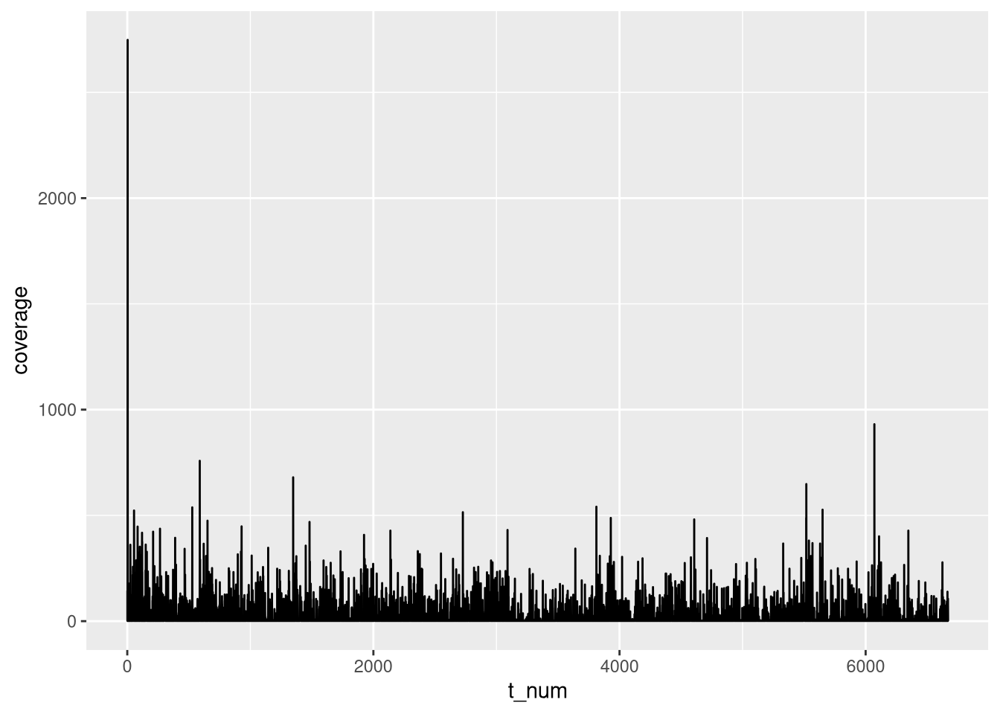
* tile coverage in chrom1tiles_reads %>% filter(t_num < 6671) %>% group_by(region_id, t_num, sample) %>% summarise(coverage = n()) %>% ungroup() %>%
ggplot(aes(x = t_num, y = coverage)) +
geom_line() +
facet_wrap(~ sample)`summarise()` has grouped output by 'region_id', 't_num'. You can override
using the `.groups` argument.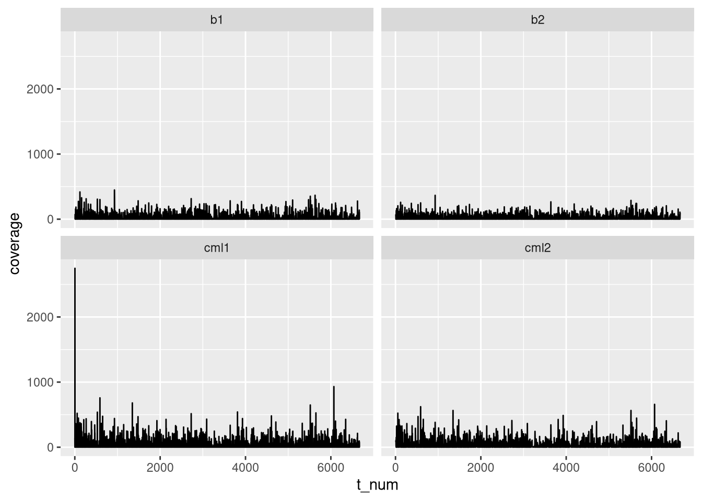
tiles_reads_summary <- tiles_reads %>% group_by(region_id, t_num, sample) %>% summarise(coverage = n()) %>% ungroup()`summarise()` has grouped output by 'region_id', 't_num'. You can override
using the `.groups` argument.tiles_reads_summary <- data.frame(tiles_reads_summary)dtu.optiles %>% filter(FDR < 0.05) %>% nrow()[1] 37495tiles_reads_summary %>% mutate(sig_fdr = ifelse(region_id %in% filter(dtu.optiles, FDR < 0.05)$region_id, TRUE, FALSE)) %>%
group_by(region_id, t_num, sig_fdr) %>% summarise(cov = sum(coverage)) %>%
ggplot(aes(x = log2(cov), colour = sig_fdr)) +
geom_density()`summarise()` has grouped output by 'region_id', 't_num'. You can override
using the `.groups` argument.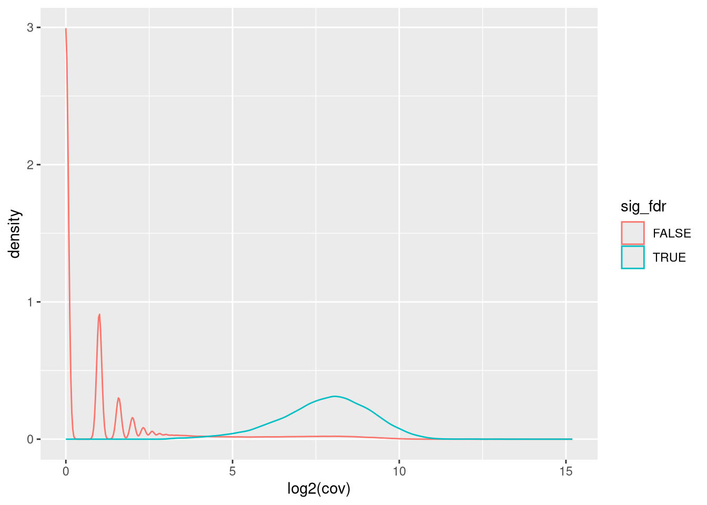
tiles_reads_summary %>% mutate(sig_fdr = ifelse(region_id %in% filter(dtu.optiles, FDR < 0.05)$region_id, TRUE, FALSE)) %>%
group_by(region_id, t_num, sig_fdr) %>% summarise(cov = sum(coverage)) %>%
ggplot(aes(x = log2(cov), colour = sig_fdr)) +
geom_histogram(bins = 50) +
facet_wrap(~sig_fdr)`summarise()` has grouped output by 'region_id', 't_num'. You can override
using the `.groups` argument.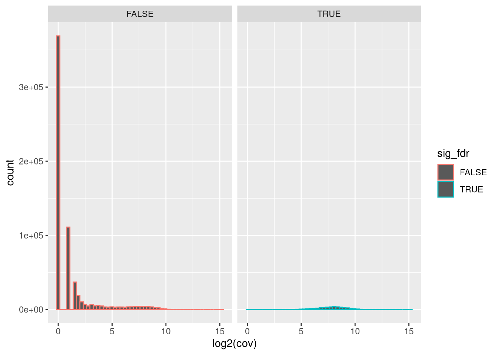
* so significant tiles have more coverage * makes sensedmrcate_seq_dmr$rank <- 1:nrow(dmrcate_seq_dmr)tiles_dmr <- find_overlaps(as_granges(optiles_all), as_granges(dmrcate_seq_dmr)) %>% data.frame()tiles_reads_summary %>% mutate(sig_fdr = ifelse(region_id %in% filter(dtu.optiles, FDR < 0.05)$region_id, TRUE, FALSE),
sig_dmr = ifelse(region_id %in% tiles_dmr$region_id, TRUE, FALSE)) %>%
group_by(region_id, t_num, sig_fdr, sig_dmr) %>% summarise(cov = sum(coverage)) %>%
ggplot(aes(x = sig_fdr, y = log2(cov), fill = sig_fdr)) +
geom_boxplot()`summarise()` has grouped output by 'region_id', 't_num', 'sig_fdr'. You can
override using the `.groups` argument.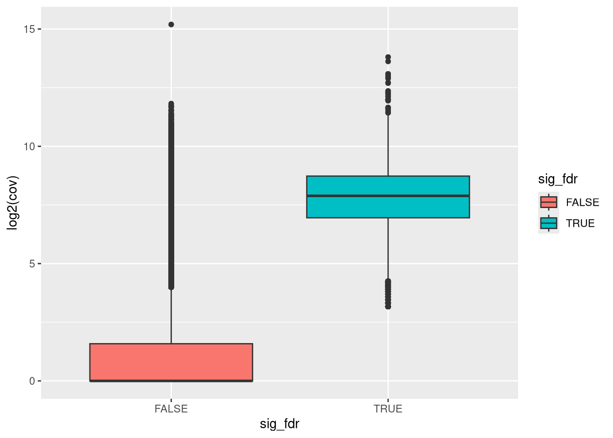
tiles_reads_summary %>% mutate(sig_fdr = ifelse(region_id %in% filter(dtu.optiles, FDR < 0.05)$region_id, TRUE, FALSE),
sig_dmr = ifelse(region_id %in% tiles_dmr$region_id, TRUE, FALSE)) %>%
group_by(region_id, t_num, sig_fdr, sig_dmr) %>% summarise(cov = sum(coverage)) %>%
ggplot(aes(x = sig_dmr, y = log2(cov), fill = sig_dmr)) +
geom_boxplot()`summarise()` has grouped output by 'region_id', 't_num', 'sig_fdr'. You can
override using the `.groups` argument.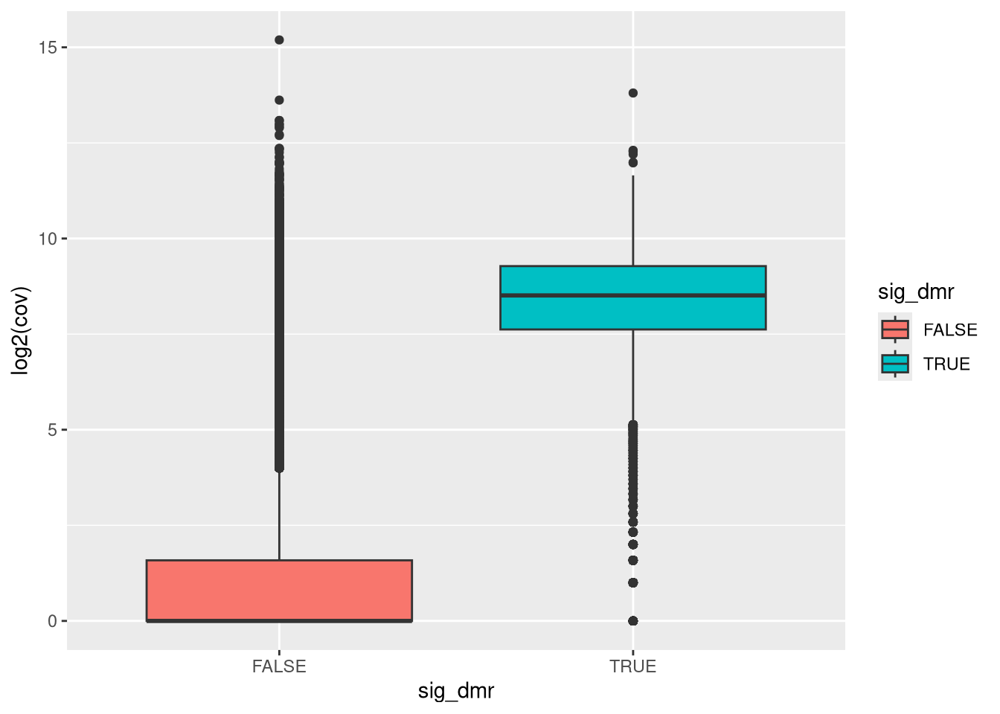
* damn this does not look promisingtiles_reads_summary %>% mutate(sig_fdr = ifelse(region_id %in% filter(dtu.optiles, FDR < 0.05)$region_id, TRUE, FALSE),
sig_dmr = ifelse(region_id %in% tiles_dmr$region_id, TRUE, FALSE)) %>%
group_by(region_id, t_num, sig_fdr, sig_dmr) %>% summarise(cov = sum(coverage)) %>%
pivot_longer(cols = c(sig_fdr, sig_dmr), names_to = "method", values_to = "signif") %>%
ggplot(aes(x = method, y = log2(cov), fill = signif)) +
geom_boxplot()`summarise()` has grouped output by 'region_id', 't_num', 'sig_fdr'. You can
override using the `.groups` argument.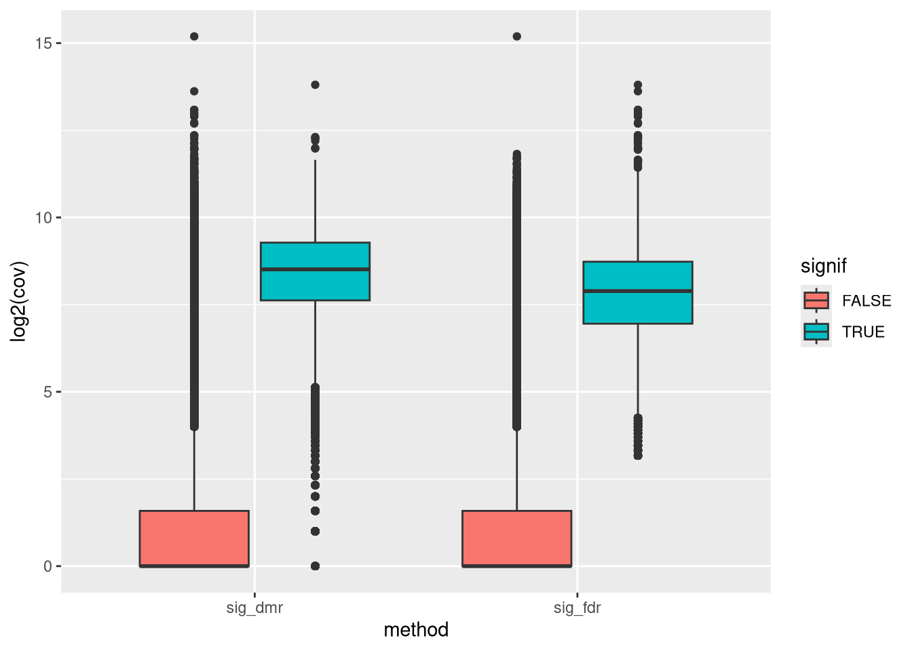
a lot smaller of a difference than expected
yes mean is slightly smaller - but tail is bigger in dmr
maybe would look better combining filtering with the delta???
try with exon as well first though
dtu_tiles_5_exon %>% filter(FDR < 0.05) %>% distinct(region_id) %>% nrow()[1] 33194tiles_reads_summary %>% mutate(sig_fdr = ifelse(region_id %in% filter(dtu.optiles, FDR < 0.05)$region_id, TRUE, FALSE),
sig_fdr_exon = ifelse(region_id %in% distinct(filter(dtu_tiles_5_exon, FDR < 0.05), region_id)$region_id, TRUE, FALSE),
sig_dmr = ifelse(region_id %in% tiles_dmr$region_id, TRUE, FALSE)) %>%
group_by(region_id, t_num, sig_fdr, sig_fdr_exon, sig_dmr) %>% summarise(cov = sum(coverage)) %>%
pivot_longer(cols = c(sig_fdr, sig_fdr_exon, sig_dmr), names_to = "method", values_to = "signif") %>%
ggplot(aes(x = method, y = log2(cov), fill = signif)) +
geom_boxplot()`summarise()` has grouped output by 'region_id', 't_num', 'sig_fdr',
'sig_fdr_exon'. You can override using the `.groups` argument.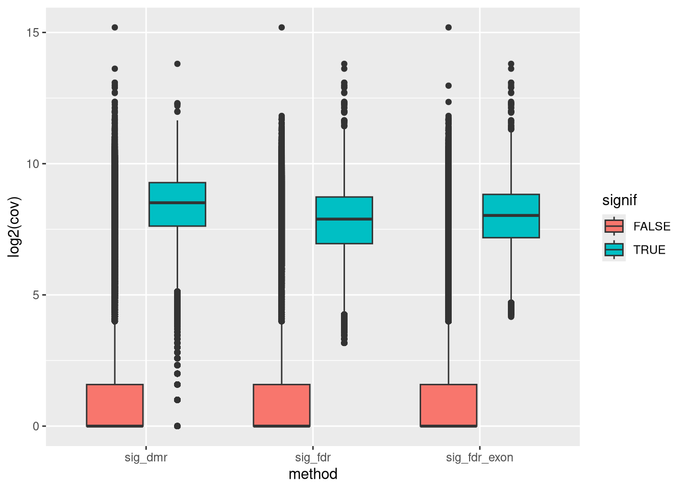
bin_delta <- find_overlaps(as_granges(all_samples_simp), as_granges(optiles_all)) %>% data.frame() %>%
distinct(sample, read_id, start, end, alpha, region_id) %>%
mutate(alpha_group = case_when(alpha < 0.2 ~ "a < 0.2",
alpha > 0.8 ~ "a > 0.8",
alpha >= 0.2 & alpha <= 0.4 ~ "0.2 <= a <= 0.4",
alpha > 0.4 & alpha < 0.6 ~ "0.4 < a < 0.6",
TRUE ~ "0.6 <= a <= 0.8")) %>%
mutate(transcript = paste0(region_id, "_", alpha_group)) %>% mutate(sample_type = ifelse(sample %in% c("b1", "b2"), "B", "CML")) %>%
group_by(region_id, sample_type) %>% mutate(mean_alpha = mean(alpha)) %>% ungroup() %>% distinct(region_id, sample_type, mean_alpha) %>% .[order(.$region_id),]
bin_delta <- bin_delta %>% pivot_wider(names_from = sample_type, values_from = mean_alpha) %>% mutate(delta_b_minus_cml = B - CML)
bin_delta <- data.frame(bin_delta)dtu.optiles <- dtu.optiles %>% mutate(delta_b_minus_cml = bin_delta[match(.$region_id, bin_delta$region_id), "delta_b_minus_cml"])
dtu.optiles %>%
ggplot(aes(x = delta_b_minus_cml, y = -log10(FDR))) +
geom_point(alpha = 0.2)Warning: Removed 30612 rows containing missing values or values outside the scale range
(`geom_point()`).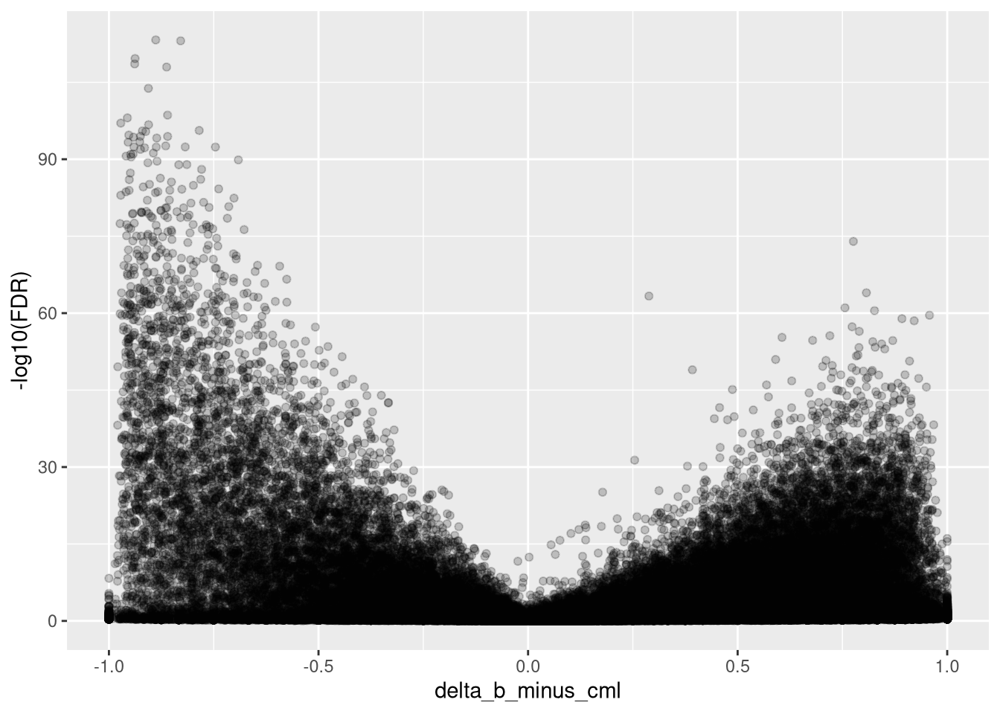
* let’s say abs(delta) > 0.2dtu.optiles %>% filter(FDR < 0.05) %>%
ggplot(aes(x = abs(delta_b_minus_cml))) +
geom_density()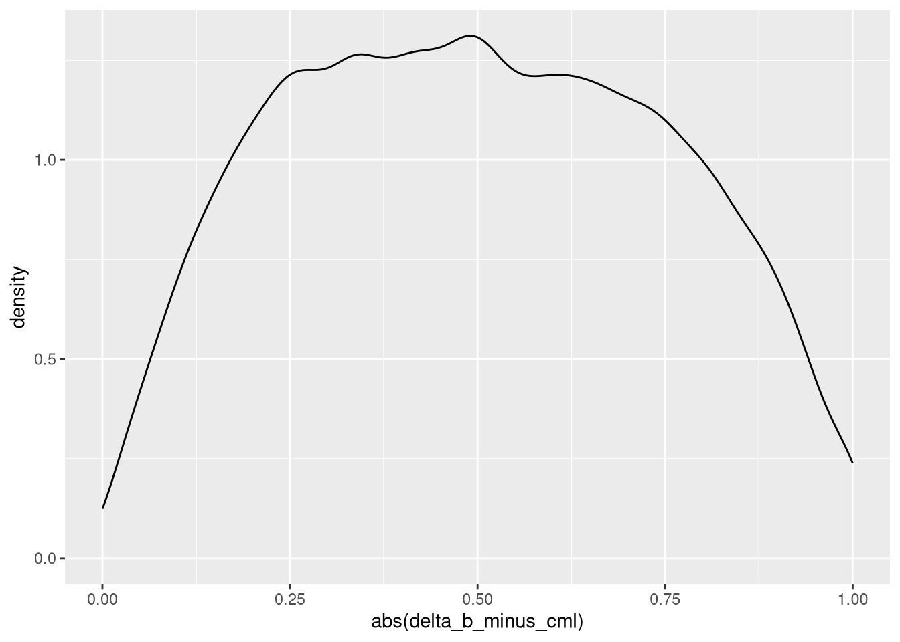
dtu.optiles %>% filter(FDR < 0.05) %>%
ggplot(aes(x = abs(delta_b_minus_cml))) +
geom_histogram(bins = 50) +
geom_vline(xintercept = 0.2, colour = "red")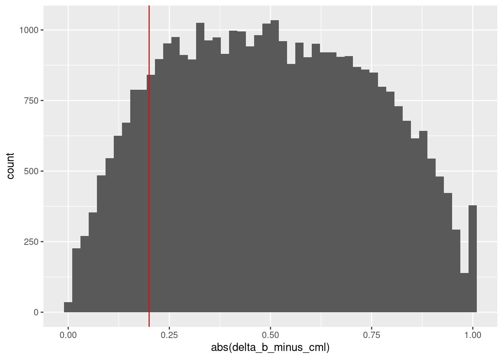
* as a propdtu.optiles %>% mutate(fdr_sig = ifelse(FDR < 0.05, TRUE, FALSE), delta_gr_0.2 = ifelse(abs(delta_b_minus_cml) > 0.2, TRUE, FALSE)) %>%
ggplot(aes(x = fdr_sig, fill = delta_gr_0.2)) +
geom_bar()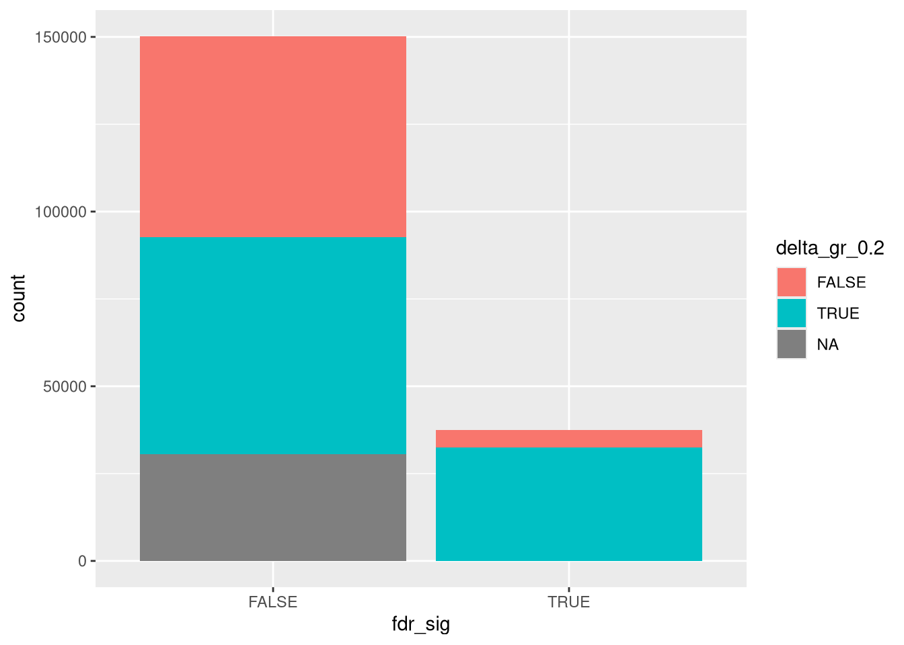
dtu.optiles %>% mutate(fdr_sig = ifelse(FDR < 0.05, TRUE, FALSE), delta_gr_0.2 = ifelse(abs(delta_b_minus_cml) > 0.2, TRUE, FALSE)) %>% filter(fdr_sig == TRUE) %>%
ggplot(aes(x = fdr_sig, fill = delta_gr_0.2)) +
geom_bar(position = "fill")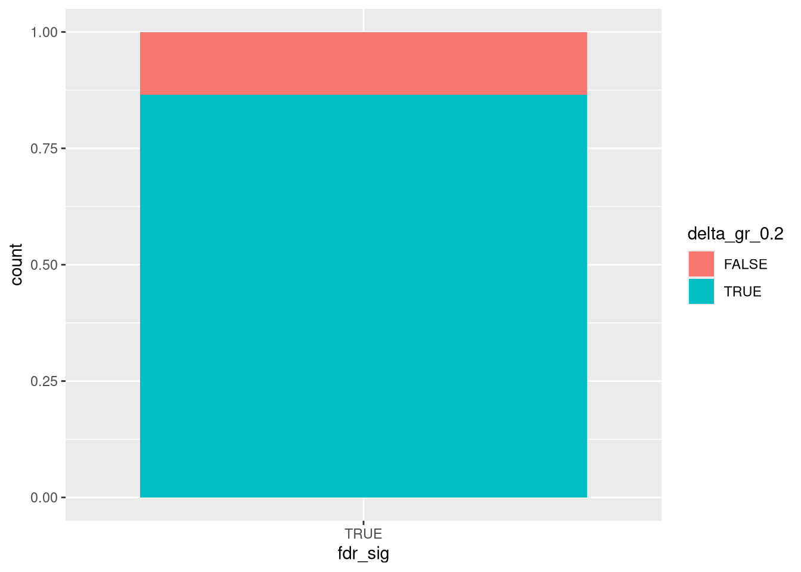
dtu.optiles %>% filter(FDR < 0.05, abs(delta_b_minus_cml) > 0.2) %>% nrow()[1] 32448tiles_reads_summary %>% mutate(delta = bin_delta[match(.$region_id, bin_delta$region_id), "delta_b_minus_cml"]) %>%
mutate(sig_fdr = ifelse(region_id %in% filter(dtu.optiles, FDR < 0.05)$region_id, TRUE, FALSE),
sig_fdr_exon = ifelse(region_id %in% distinct(filter(dtu_tiles_5_exon, FDR < 0.05), region_id)$region_id, TRUE, FALSE),
sig_fdr_delta = ifelse(region_id %in% filter(dtu.optiles, FDR < 0.05, abs(delta_b_minus_cml) > 0.2)$region_id, TRUE, FALSE),
sig_dmr = ifelse(region_id %in% tiles_dmr$region_id, TRUE, FALSE)) %>%
group_by(region_id, t_num, sig_fdr, sig_fdr_delta, sig_fdr_exon, sig_dmr) %>% summarise(cov = sum(coverage)) %>%
pivot_longer(cols = c(sig_fdr, sig_fdr_delta, sig_fdr_exon, sig_dmr), names_to = "method", values_to = "signif") %>%
ggplot(aes(x = method, y = log2(cov), fill = signif)) +
geom_boxplot()`summarise()` has grouped output by 'region_id', 't_num', 'sig_fdr',
'sig_fdr_delta', 'sig_fdr_exon'. You can override using the `.groups` argument.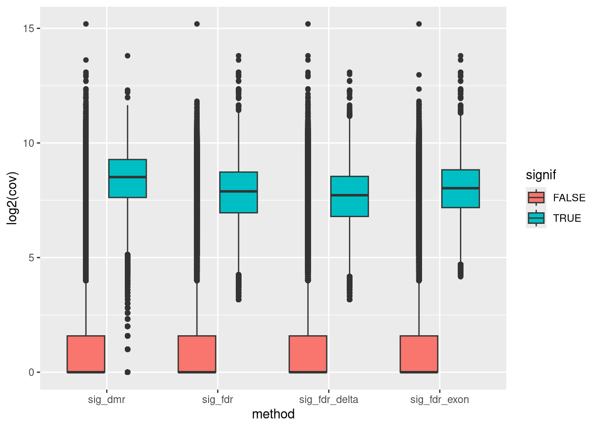
tiles_reads_summary %>% mutate(delta = bin_delta[match(.$region_id, bin_delta$region_id), "delta_b_minus_cml"]) %>%
mutate(sig_fdr = ifelse(region_id %in% filter(dtu.optiles, FDR < 0.05)$region_id, TRUE, FALSE),
sig_fdr_exon = ifelse(region_id %in% distinct(filter(dtu_tiles_5_exon, FDR < 0.05), region_id)$region_id, TRUE, FALSE),
sig_fdr_delta = ifelse(region_id %in% filter(dtu.optiles, FDR < 0.05, abs(delta_b_minus_cml) > 0.2)$region_id, TRUE, FALSE),
sig_dmr = ifelse(region_id %in% tiles_dmr$region_id, TRUE, FALSE)) %>%
group_by(region_id, t_num, sig_fdr, sig_fdr_delta, sig_fdr_exon, sig_dmr) %>% summarise(cov = sum(coverage)) %>%
pivot_longer(cols = c(sig_fdr, sig_fdr_delta, sig_fdr_exon, sig_dmr), names_to = "method", values_to = "signif") %>%
ggplot(aes(x = method, y = log2(cov), fill = signif)) +
geom_violin()`summarise()` has grouped output by 'region_id', 't_num', 'sig_fdr',
'sig_fdr_delta', 'sig_fdr_exon'. You can override using the `.groups` argument.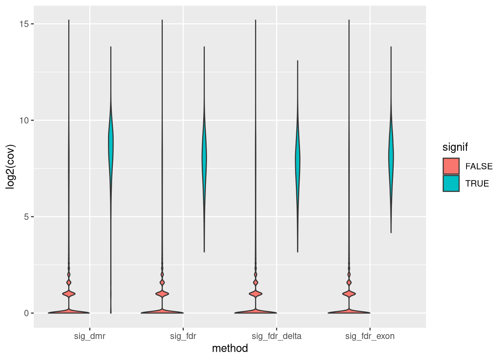
but yeah - damn
ok let’s look at the tail dmrs
cov < 32
log2(32)[1] 52^5[1] 32tiles_reads_summary <- tiles_reads_summary %>% mutate(sig_fdr = ifelse(region_id %in% filter(dtu.optiles, FDR < 0.05)$region_id, TRUE, FALSE),
sig_fdr_exon = ifelse(region_id %in% distinct(filter(dtu_tiles_5_exon, FDR < 0.05), region_id)$region_id, TRUE, FALSE),
sig_fdr_delta = ifelse(region_id %in% filter(dtu.optiles, FDR < 0.05, abs(delta_b_minus_cml) > 0.2)$region_id, TRUE, FALSE),
sig_dmr = ifelse(region_id %in% tiles_dmr$region_id, TRUE, FALSE))tiles_reads_summary %>%
group_by(region_id, t_num, sig_fdr, sig_fdr_delta, sig_fdr_exon, sig_dmr) %>% summarise(cov = sum(coverage)) %>%
filter(sig_dmr == TRUE, cov < 32) %>% nrow() # %>%`summarise()` has grouped output by 'region_id', 't_num', 'sig_fdr',
'sig_fdr_delta', 'sig_fdr_exon'. You can override using the `.groups` argument.[1] 588 # mutate(delta = bin_delta[match(.$region_id, bin_delta$region_id), "delta_b_minus_cml"])reg <- tiles_reads_summary %>%
group_by(region_id, t_num, sig_fdr, sig_fdr_delta, sig_fdr_exon, sig_dmr) %>% summarise(cov = sum(coverage)) %>%
filter(sig_dmr == TRUE, cov < 32) %>% .$region_id`summarise()` has grouped output by 'region_id', 't_num', 'sig_fdr',
'sig_fdr_delta', 'sig_fdr_exon'. You can override using the `.groups` argument.tiles_dmr %>% filter(region_id %in% reg) %>% distinct(rank, no.cpgs, min_smoothed_fdr, maxdiff, meandiff) %>% nrow()[1] 518tiles_dmr %>% filter(region_id %in% reg) %>% distinct(rank, no.cpgs, min_smoothed_fdr, maxdiff, meandiff) %>% .[1:5,] rank no.cpgs min_smoothed_fdr maxdiff meandiff
1 343 41 2.120613e-232 9.927138 2.765589
2 4291 3 7.101960e-35 -6.466376 -5.690605
3 1662 7 3.111898e-83 -8.065595 -3.961750
4 7473 3 9.987549e-16 -5.064284 -4.341161
5 54 32 0.000000e+00 10.617218 5.536227tiles_dmr %>% mutate(low_cov_signif = ifelse(region_id %in% reg, TRUE, FALSE)) %>%
group_by(rank, low_cov_signif) %>% summarise(n=n()) %>% filter(n > 1) %>% nrow()`summarise()` has grouped output by 'rank'. You can override using the
`.groups` argument.[1] 3691dtu_tiles_3 <- dtu_tiles_3 %>% mutate(delta_b_minus_cml = bin_delta[match(.$region_id, bin_delta$region_id), "delta_b_minus_cml"])ggVennDiagram(list(alpha_5 = filter(dtu.optiles, FDR < 0.05, abs(delta_b_minus_cml) > 0.2)$region_id,
alpha_3 = filter(dtu_tiles_3, FDR < 0.05, abs(delta_b_minus_cml) > 0.2)$region_id))Warning in geom_label(aes(label = .data[[label]]), data = region_label, :
Ignoring unknown parameters: `linewidth`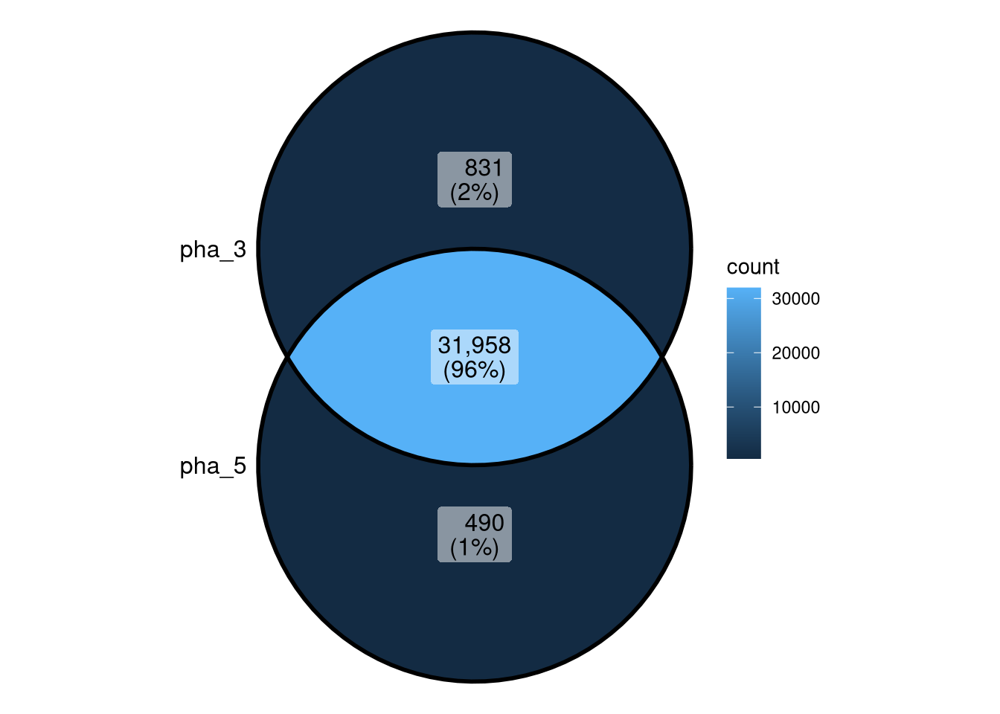
* of course 3 groups makes even more significance * but what does it do to coverage??tiles_reads_summary %>% mutate(delta = bin_delta[match(.$region_id, bin_delta$region_id), "delta_b_minus_cml"]) %>%
mutate(sig_dtu_3 = ifelse(region_id %in% filter(dtu_tiles_3, FDR < 0.05, abs(delta_b_minus_cml) > 0.2)$region_id, TRUE, FALSE),
sig_dtu = ifelse(region_id %in% filter(dtu.optiles, FDR < 0.05, abs(delta_b_minus_cml) > 0.2)$region_id, TRUE, FALSE),
sig_dmr = ifelse(region_id %in% tiles_dmr$region_id, TRUE, FALSE)) %>%
group_by(region_id, t_num, sig_dtu, sig_dtu_3, sig_dmr) %>% summarise(cov = sum(coverage)) %>%
pivot_longer(cols = c(sig_dtu, sig_dtu_3, sig_dmr), names_to = "method", values_to = "signif") %>%
ggplot(aes(x = method, y = log2(cov), fill = signif)) +
geom_boxplot()`summarise()` has grouped output by 'region_id', 't_num', 'sig_dtu',
'sig_dtu_3'. You can override using the `.groups` argument.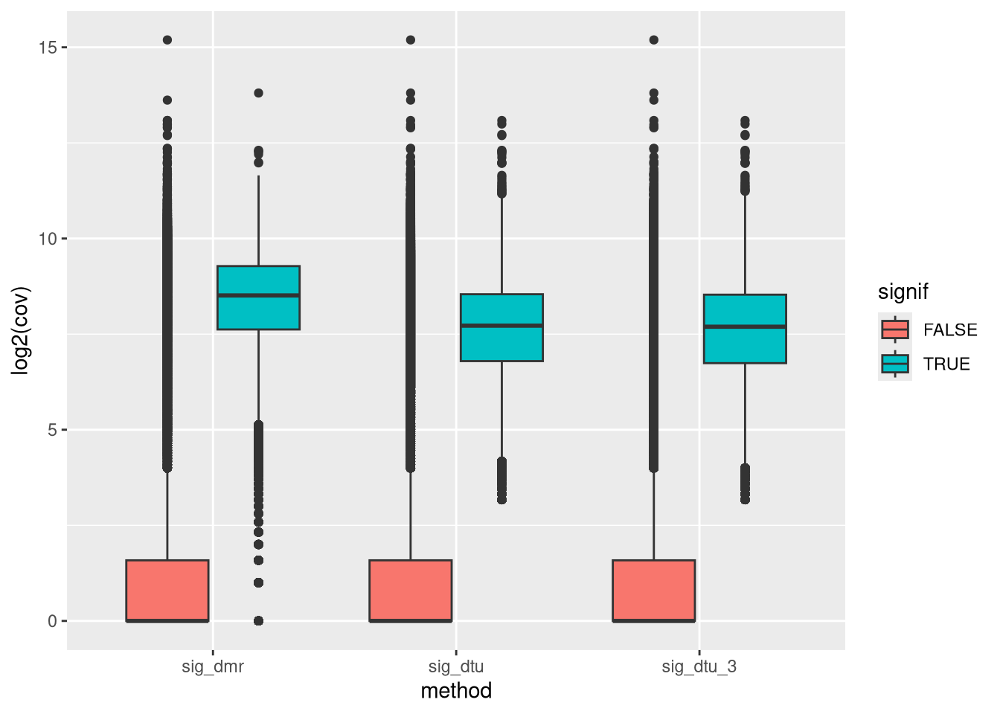
* huh no change in dtu vs dtu with 3 groups - ok * again this was actually coverage in the tile - not the dmr itselffind_overlaps(as_granges(dmrcate_seq_dmr), as_granges(all_samples_simp)) %>% data.frame() %>%
group_by(rank, sample) %>% summarise(coverage = n()) %>% ungroup() %>% data.frame() %>%
group_by(rank) %>% summarise(cov = sum(coverage)) %>% ungroup() %>% mutate(a = "a") %>%
ggplot(aes(x = a, y = log2(cov))) +
geom_boxplot()`summarise()` has grouped output by 'rank'. You can override using the
`.groups` argument.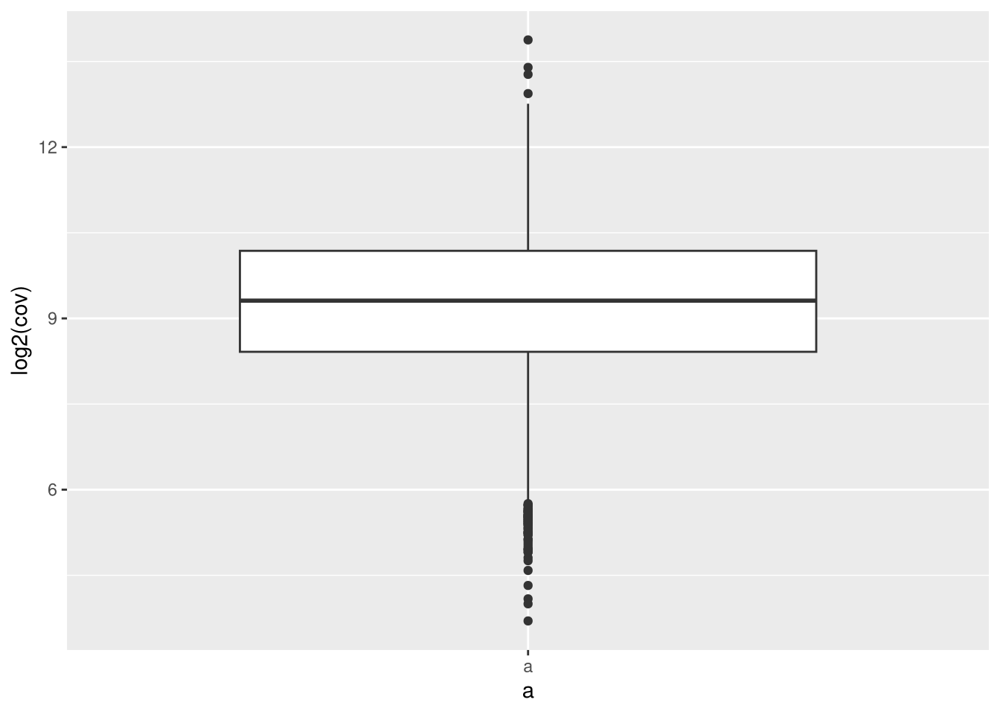
* ok this does make the mean a bit higher, tail is still longer thoughtiles_reads <- find_overlaps(as_granges(optiles_all), as_granges(all_samples_simp)) %>% data.frame()
tiles_reads_summary <- tiles_reads %>% group_by(region_id, t_num, sample) %>% summarise(coverage = n()) %>% ungroup()`summarise()` has grouped output by 'region_id', 't_num'. You can override
using the `.groups` argument.tiles_reads_summary <- data.frame(tiles_reads_summary)ok is it the least significant dmrs with low coverage???? -please let me have something
oh wait it’s same as before where mid beta was for tile instead of dmr - not the actual length (fixing it other time didn’t actually change the plot but we can only hope)
dmr_cov <- find_overlaps(as_granges(dmrcate_seq_dmr), as_granges(all_samples_simp)) %>% data.frame() %>%
group_by(rank, sample) %>% summarise(coverage = n()) %>% ungroup() %>% data.frame()`summarise()` has grouped output by 'rank'. You can override using the
`.groups` argument.dmr_cov %>% group_by(rank) %>% summarise(cov = sum(coverage)) %>% ungroup() %>% mutate(dmr = "dmr") %>%
ggplot(aes(x = dmr, y = cov)) +
geom_boxplot()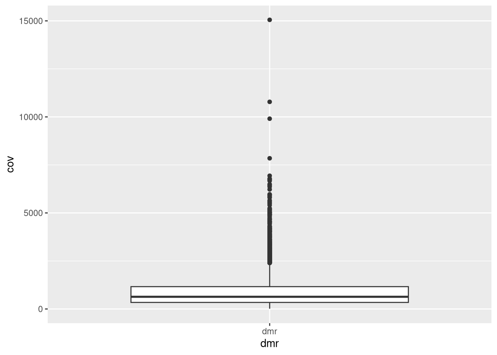
dmr_cov %>% group_by(rank) %>% summarise(cov = sum(coverage)) %>% ungroup() %>% mutate(dmr = "dmr") %>%
ggplot(aes(x = dmr, y = log2(cov))) +
geom_boxplot()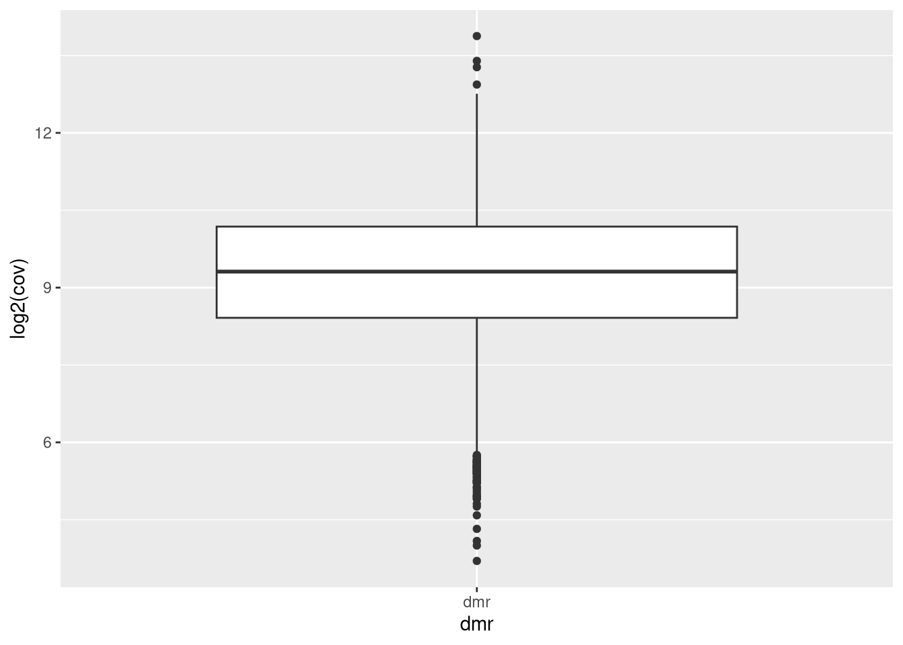
* and again looks exact same boodmr_cov %>% group_by(rank) %>% summarise(cov = sum(coverage)) %>% ungroup() %>%
ggplot(aes(x = rank, y = cov)) +
geom_point(alpha = 0.3)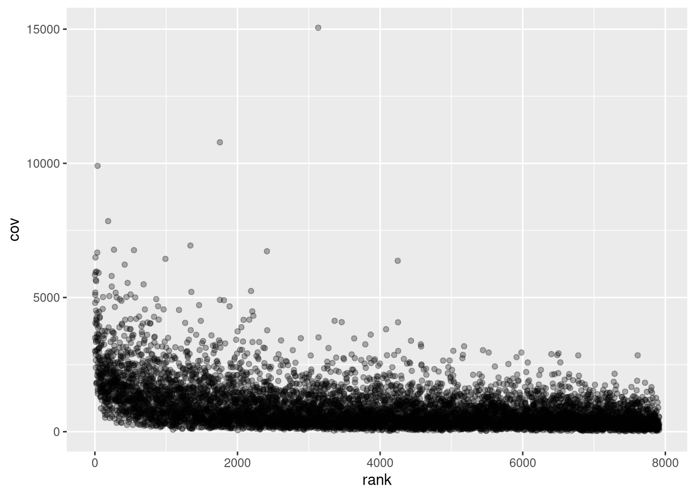
Error: ! in callr subprocess. Caused by error in
data[[var]][scale_index[[i]]]: ! Can’t subset columns past
the end. ℹ Locations 2, 3, 4, …, 187739, and 187740 don’t exist. ℹ There
is only 1 column.
CHUNK 44, 45, 46
dmr_cov %>% group_by(rank) %>% summarise(cov = sum(coverage)) %>% ungroup() %>%
ggplot(aes(x = rank, y = cov)) +
geom_point(alpha = 0.1) +
scale_y_continuous(limits = c(0,5000))dmr_cov %>% group_by(rank) %>% summarise(cov = sum(coverage)) %>% ungroup() %>%
ggplot(aes(x = rank, y = log2(cov))) +
geom_point(alpha = 0.1)ok this does show it
except same thing with dtu
tiles_reads_summary %>% mutate(rank = dtu.optiles[match(.$region_id, dtu.optiles$region_id), "dtu_rank"]) %>%
group_by(rank) %>% summarise(cov = sum(coverage)) %>% ungroup() %>%
ggplot(aes(x = rank, y = cov)) +
geom_point(alpha = 0.1)
tiles_reads_summary %>% mutate(rank = dtu.optiles[match(.$region_id, dtu.optiles$region_id), "dtu_rank"]) %>%
group_by(rank) %>% summarise(cov = sum(coverage)) %>% ungroup() %>%
ggplot(aes(x = rank, y = log2(cov))) +
geom_point(alpha = 0.1)tiles_reads_summary %>% mutate(rank = dtu.optiles[match(.$region_id, dtu.optiles$region_id), "dtu_rank"]) %>%
group_by(rank, region_id) %>% summarise(cov = sum(coverage)) %>% ungroup() %>% .[order(.$cov, decreasing = TRUE),] %>% .[1:5,]tiles_reads_summary %>% mutate(rank = dtu.optiles[match(.$region_id, dtu.optiles$region_id), "dtu_rank"]) %>%
group_by(rank) %>% summarise(cov = sum(coverage)) %>% ungroup() %>%
ggplot(aes(x = rank, y = cov)) +
geom_point(alpha = 0.1) +
scale_y_continuous(limits = c(0, 25000))tiles_reads_summary %>% mutate(delta = bin_delta[match(.\(region_id, bin_delta\)region_id), “delta_b_minus_cml”]) %>% mutate(sig_dtu_3 = ifelse(region_id %in% filter(dtu_tiles_3, FDR < 0.05, abs(delta_b_minus_cml) > 0.2)\(region_id, TRUE, FALSE), sig_dtu = ifelse(region_id %in% filter(dtu.optiles, FDR < 0.05, abs(delta_b_minus_cml) > 0.2)\)region_id, TRUE, FALSE), sig_dmr = ifelse(region_id %in% tiles_dmr$region_id, TRUE, FALSE)) %>%
sessionInfo()R version 4.4.1 (2024-06-14)
Platform: x86_64-pc-linux-gnu
Running under: Red Hat Enterprise Linux 9.6 (Plow)
Matrix products: default
BLAS/LAPACK: FlexiBLAS OPENBLAS-OPENMP; LAPACK version 3.9.0
locale:
[1] LC_CTYPE=en_AU.UTF-8 LC_NUMERIC=C
[3] LC_TIME=en_AU.UTF-8 LC_COLLATE=en_AU.UTF-8
[5] LC_MONETARY=en_AU.UTF-8 LC_MESSAGES=en_AU.UTF-8
[7] LC_PAPER=en_AU.UTF-8 LC_NAME=C
[9] LC_ADDRESS=C LC_TELEPHONE=C
[11] LC_MEASUREMENT=en_AU.UTF-8 LC_IDENTIFICATION=C
time zone: Australia/Melbourne
tzcode source: system (glibc)
attached base packages:
[1] parallel stats4 stats graphics grDevices utils datasets
[8] methods base
other attached packages:
[1] missMethyl_1.40.3
[2] IlluminaHumanMethylationEPICv2anno.20a1.hg38_1.0.0
[3] IlluminaHumanMethylationEPICanno.ilm10b4.hg19_0.6.0
[4] IlluminaHumanMethylation450kanno.ilmn12.hg19_0.6.1
[5] minfi_1.52.1
[6] bumphunter_1.48.0
[7] locfit_1.5-9.12
[8] iterators_1.0.14
[9] foreach_1.5.2
[10] Biostrings_2.74.1
[11] XVector_0.46.0
[12] SummarizedExperiment_1.36.0
[13] MatrixGenerics_1.18.1
[14] matrixStats_1.5.0
[15] TxDb.Hsapiens.UCSC.hg19.knownGene_3.2.2
[16] GenomicFeatures_1.58.0
[17] AnnotationDbi_1.68.0
[18] Biobase_2.66.0
[19] ggVennDiagram_1.5.7
[20] OpTiles_0.1.0
[21] edgeR_4.4.2
[22] limma_3.62.2
[23] ggplot2_3.5.2
[24] dplyr_1.1.4
[25] stringr_1.5.1
[26] tidyr_1.3.1
[27] plyranges_1.26.0
[28] GenomicRanges_1.58.0
[29] GenomeInfoDb_1.42.3
[30] IRanges_2.40.1
[31] S4Vectors_0.44.0
[32] BiocGenerics_0.52.0
[33] data.table_1.17.8
[34] annotatr_1.32.0
loaded via a namespace (and not attached):
[1] splines_4.4.1 later_1.4.2
[3] BiocIO_1.16.0 bitops_1.0-9
[5] filelock_1.0.3 tibble_3.3.0
[7] R.oo_1.27.1 cellranger_1.1.0
[9] preprocessCore_1.68.0 XML_3.99-0.18
[11] lifecycle_1.0.4 httr2_1.2.1
[13] rprojroot_2.1.0 base64_2.0.2
[15] lattice_0.22-6 MASS_7.3-60.2
[17] scrime_1.3.7 magrittr_2.0.3
[19] sass_0.4.10 rmarkdown_2.29
[21] BSgenome.Hsapiens.UCSC.hg38_1.4.5 jquerylib_0.1.4
[23] yaml_2.3.10 httpuv_1.6.16
[25] askpass_1.2.1 doRNG_1.8.6.3
[27] DBI_1.2.3 RColorBrewer_1.1-3
[29] abind_1.4-8 zlibbioc_1.52.0
[31] quadprog_1.5-8 purrr_1.1.0
[33] R.utils_2.13.0 RCurl_1.98-1.17
[35] rappdirs_0.3.3 git2r_0.36.2
[37] GenomeInfoDbData_1.2.13 rentrez_1.2.4
[39] genefilter_1.88.0 annotate_1.84.0
[41] DelayedMatrixStats_1.28.1 codetools_0.2-20
[43] DelayedArray_0.32.0 xml2_1.4.0
[45] tidyselect_1.2.1 UCSC.utils_1.2.0
[47] farver_2.1.2 beanplot_1.3.1
[49] BiocFileCache_2.14.0 illuminaio_0.48.0
[51] GenomicAlignments_1.42.0 jsonlite_2.0.0
[53] multtest_2.62.0 survival_3.6-4
[55] bbmle_1.0.25.1 tools_4.4.1
[57] progress_1.2.3 Rcpp_1.1.0
[59] glue_1.8.0 gridExtra_2.3
[61] SparseArray_1.6.2 xfun_0.52
[63] qvalue_2.38.0 HDF5Array_1.34.0
[65] withr_3.0.2 numDeriv_2016.8-1.1
[67] BiocManager_1.30.26 fastmap_1.2.0
[69] rhdf5filters_1.18.1 openssl_2.3.3
[71] digest_0.6.37 R6_2.6.1
[73] gtools_3.9.5 dichromat_2.0-0.1
[75] biomaRt_2.62.1 RSQLite_2.4.2
[77] R.methodsS3_1.8.2 generics_0.1.4
[79] rtracklayer_1.66.0 prettyunits_1.2.0
[81] httr_1.4.7 S4Arrays_1.6.0
[83] whisker_0.4.1 regioneR_1.38.0
[85] pkgconfig_2.0.3 gtable_0.3.6
[87] blob_1.2.4 siggenes_1.80.0
[89] workflowr_1.7.1 htmltools_0.5.8.1
[91] scales_1.4.0 png_0.1-8
[93] knitr_1.50 rstudioapi_0.17.1
[95] tzdb_0.5.0 reshape2_1.4.4
[97] rjson_0.2.23 nlme_3.1-164
[99] coda_0.19-4.1 curl_6.4.0
[101] org.Hs.eg.db_3.20.0 bdsmatrix_1.3-7
[103] cachem_1.1.0 rhdf5_2.50.2
[105] BiocVersion_3.20.0 restfulr_0.0.16
[107] GEOquery_2.74.0 pillar_1.11.0
[109] grid_4.4.1 reshape_0.8.10
[111] vctrs_0.6.5 promises_1.3.3
[113] dbplyr_2.5.0 xtable_1.8-8
[115] evaluate_1.0.4 readr_2.1.5
[117] mvtnorm_1.3-6 cli_3.6.5
[119] compiler_4.4.1 Rsamtools_2.22.0
[121] rlang_1.1.6 crayon_1.5.3
[123] rngtools_1.5.2 labeling_0.4.3
[125] nor1mix_1.3-3 mclust_6.1.2
[127] emdbook_1.3.14 plyr_1.8.9
[129] fs_1.6.6 stringi_1.8.7
[131] BiocParallel_1.40.2 Matrix_1.7-0
[133] BSgenome_1.74.0 hms_1.1.3
[135] easyGgplot2_1.0.0.9000 patchwork_1.3.2
[137] sparseMatrixStats_1.18.0 bit64_4.6.0-1
[139] Rhdf5lib_1.28.0 KEGGREST_1.46.0
[141] methylKit_1.32.1 statmod_1.5.1
[143] fastseg_1.52.0 AnnotationHub_3.14.0
[145] memoise_2.0.1 bslib_0.9.0
[147] bit_4.6.0 readxl_1.4.5